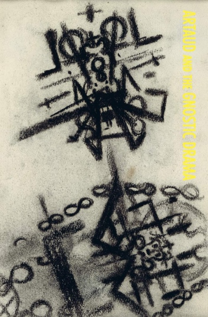
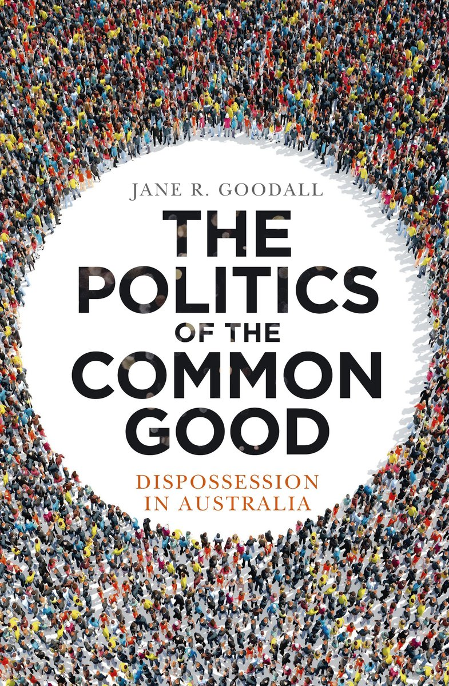
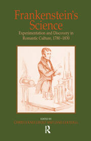
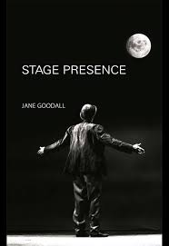

Cultural historian specialising in the dynamics of cultural change. Author of seven scholarly books spanning performance, science, propaganda, and politics, as well as three detective novels. Currently researching natural language experiments with large language models.

Extended dialogue experiments exploring language, cognition, and cultural dynamics through large language model interaction.
The Conversation
Goodall's research has centred on the cultural history of science and performance, with particular attention to how ideas mutate as they cross disciplinary boundaries. Her recent work extends this into the territory of human–AI collaboration and the dynamics of machine-mediated language.
She is affiliated with the Writing and Society Research Centre at Western Sydney University.

Dispossession in Australia.

Experimentation and discovery in Romantic culture, 1780–1830.

Out of the natural order.
The Briony Williams series — three crime novels set in Australia, published by Hachette.
Regular contributor to Inside Story, an online magazine of politics, culture, and public policy published from Australia.